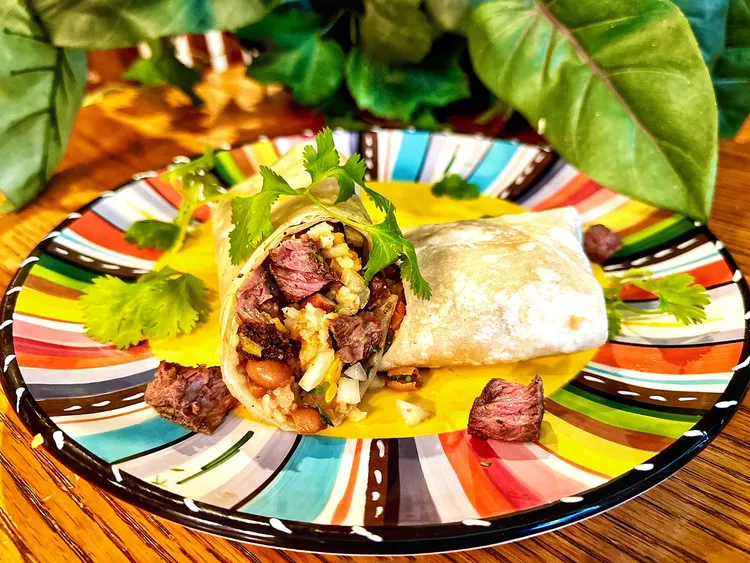

Ingredients
- 1 (10-inch) flour tortilla
- 3/4 cup cubed, cooked ribeye steak, warmed
- 1/4 cup Mexican rice, heated
- 1/4 cup pinto beans, heated
- 1/4 cup shredded Cheddar cheese
- 1 tablespoon diced onion
- 1 tablespoon chopped cilantro
Directions
- Fold a paper towel around tortilla. Microwave on High until pliable, 5 to 10 seconds.
- Lay tortilla flat on a plate. Layer steak, rice, beans, cheese, onion, and cilantro in a line across the middle of the tortilla. Fold opposing edges of the tortilla to overlap the filling. Roll 1 of the opposing edges around the filling and tuck tortilla to form a burrito.
Return to main page
Return top